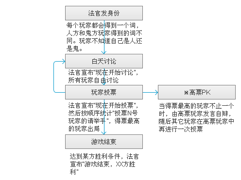

游戏分为两大阵营：水民和幽灵。
游戏开始时，每个玩家都会得到一个词，水民和幽灵玩家得到的词不同。
玩家不知道自己的身份。
A.幽灵
1.介绍 : 游戏中的少数，努力存活至总数不少于人即可取胜。
2.技能 : 投票
B.水民
1.介绍:游戏中的大多数，通过讨论和投票找出幽灵。
2.技能:投票
技能说明
投票:白天才允许投票.在法官宣布投票以后,每个人都有投票选出自己心中幽灵的权利,但是只有一票,也可以不投.投票过程中不允许改票.
游戏以“天”为单位进行。每一天分为讨论和投票两个阶段。
讨论阶段：所有玩家自由发言。
投票阶段：所有玩家投票指认心中的幽灵，法官按顺序统计每个玩家的得票数，得票最多的玩家出局。

幽灵：幽灵的人数不少于水民，幽灵胜利。
水民：所有幽灵出局，水民胜利。
游戏可由4-14人同时进行。
| 总人数 | 幽灵数 |
| 4-5 | 1 |
| 6-8 | 2 |
| 9-11 | 3 |
| 12-14 | 4 |